<div data-category="Inventory Control" data-title="CM Receipts (CMR)" data-updated="January 27, 2026" data-contributors="RoadmapIT" data-breadcrumb="Home,Inventory Control,CM Receipts (CMR)">
  <div class="page-content">
    <p>A "customer material receipt" refers to a document that records the receipt of materials provided by a customer to a company, this screen is used to document the exact items received from a customer, including quantity, description, and condition, ensuring accurate tracking of customer-supplied materials within the company's inventory</p>
    <h5>Navigation path:</h5>
    <p class="fs-6">Supply Chain Management \ Inventory \ Transaction \ CM Receipts</p>
    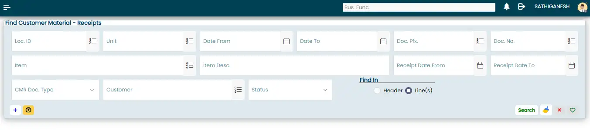
    <ul style="list-style-type: none; align-content: center">
      <li class="mouse-icon">Search screen displays the list of CM Receipts with the relevant details and its status</li>
      <li class="mouse-icon">Click on Search to filter all the records.</li>
    </ul>
    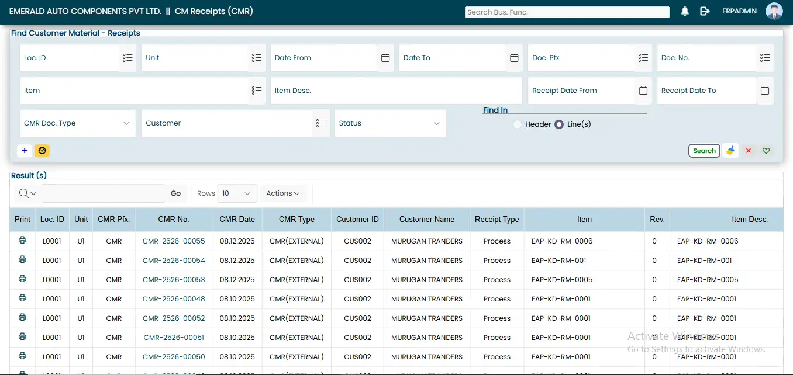
    <ul style="list-style-type: none; align-content: center">
      <li class="mouse-icon">User can filter the respective documents by entering the search parameters at the header.</li>
      <li class="mouse-icon">Using Search, system displays the results relevant to the search parameters entered.</li>
      <li class="mouse-icon">On -click; the corresponding transaction record will be displayed.</li>
      <li class="mouse-icon">
        Using
        
        icon, entered search parameters can be cleared.
      </li>
      <li class="mouse-icon">
        To close the screen, use
        <i class="bi bi-x fs-4 mx-2 text-danger"></i>
        icon.
      </li>
      <li class="mouse-icon">
        Click on
        <i class="bi bi-speedometer2 fs-4 mx-2 text-muted"></i>
        Create CMR Receipt button to create CMR from Pending documents
      </li>
    </ul>
    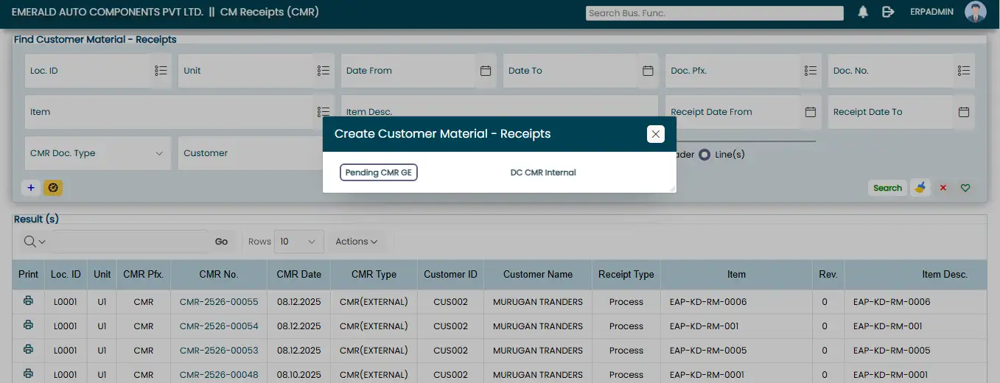
    <ul>
      <li>Pending CMR GE – to create CMR from pending Gate Entry Document</li>
      <li>Pending DC CMR Internal – to create DC for CMR internal document</li>
    </ul>
    <ul style="list-style-type: none; align-content: center">
      <li class="mouse-icon">Click on Pending CMR GE option to create the CMR document</li>
    </ul>
    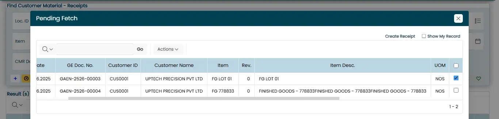
    <ul style="list-style-type: none; align-content: center">
      <li class="mouse-icon">Select the document and click on Create Receipt button and the receipt will be created</li>
    </ul>
    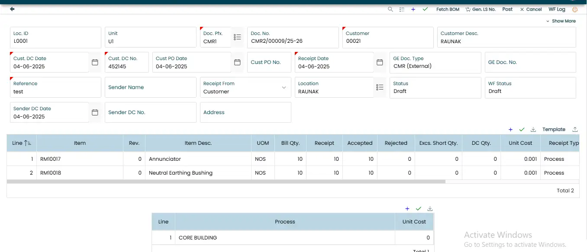
    <p>(or)</p>
    <ul style="list-style-type: none; align-content: center">
      <li class="mouse-icon">
        Click
        <i class="bi bi-plus fs-4 mx-2 text-primary"></i>
        button in the find screen to create new CMR by entering all the mandatory fields in the add dialog
      </li>
    </ul>
    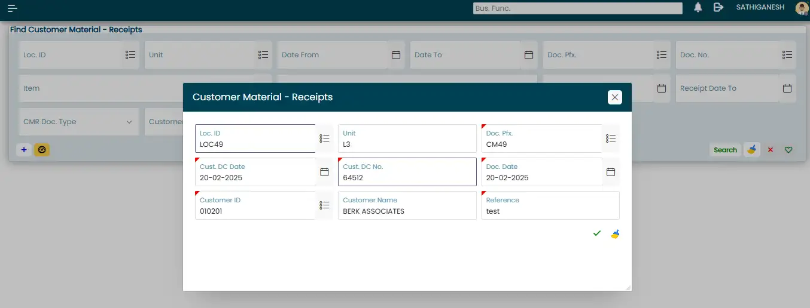
    <ul style="list-style-type: none; align-content: center">
      <li class="mouse-icon">Select Loc. ID</li>
      <li class="mouse-icon">Select the Doc. Pfx.</li>
      <li class="mouse-icon">Enter the Cust. DC. No/</li>
      <li class="mouse-icon">Select/Enter the Customer ID</li>
      <li class="mouse-icon">Enter the reference</li>
      <li class="mouse-icon">
        Click
        <i class="bi bi-check-lg fs-4 mx-1 text-success"></i>
        and the screen will be navigated to create CMR receipt
      </li>
    </ul>
    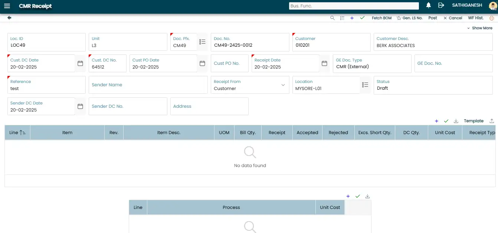
    <ul style="list-style-type: none; align-content: center">
      <li class="mouse-icon">
        Click
        <i class="bi bi-plus fs-4 mx-2 text-primary"></i>
        to create new line item (or) click Fetch BOM button to fetch the details
      </li>
    </ul>
    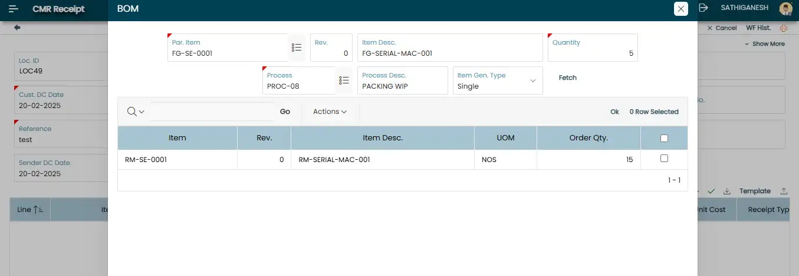
    <ul style="list-style-type: none; align-content: center">
      <li class="mouse-icon">Select Par. Item from LOV</li>
      <li class="mouse-icon">Enter the Quantity</li>
      <li class="mouse-icon">Select the Process and click on Fetch button</li>
      <li class="mouse-icon">Select the item and click on Ok</li>
    </ul>
    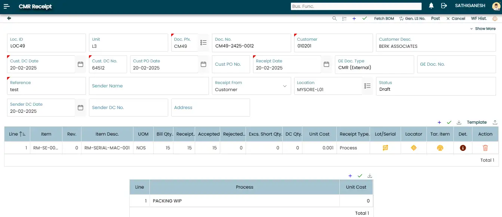
    <ul style="list-style-type: none; align-content: center">
      <li class="mouse-icon">Click on Gen. Ls. No. to generate the lot quantities against the receipt line items.</li>
    </ul>
    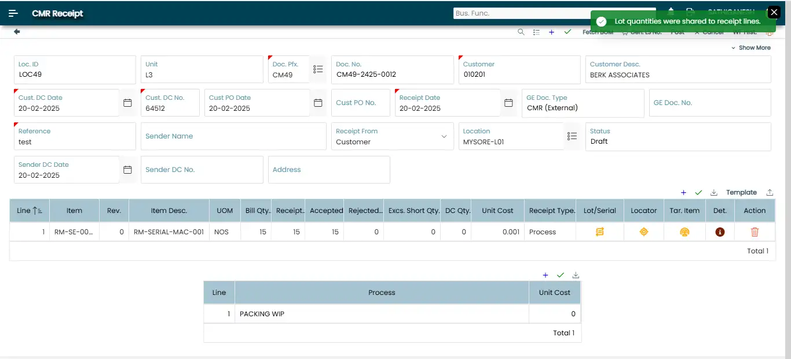
    <ul style="list-style-type: none; align-content: center">
      <li class="mouse-icon">Click on post button and the document can be forwarded for approval.</li>
    </ul>
    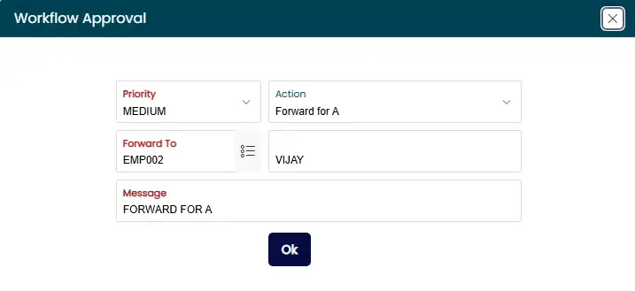
  </div>
</div>
